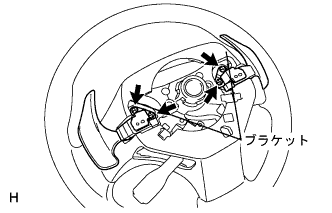
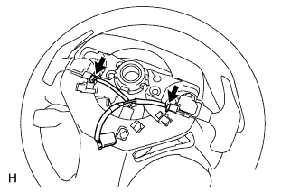
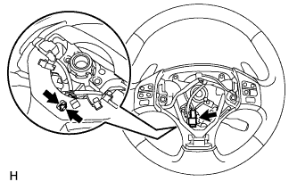
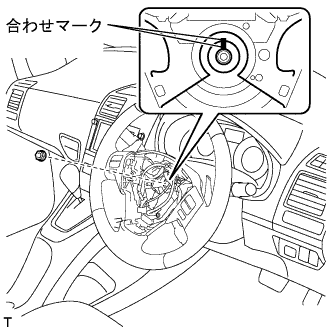

Shift Lever Assembly (U660E) Installation |
| 1. Install Transmission Shift Switch |
 |
Install the 2 transmission shift switches and 2 brackets with the 4 screws.
 |
Connect the 2 switch wire connectors to the transmission shift switches.
 |
Connect the switch wire connector and install the connector clamp to the steering wheel assembly.
| 2. Check Front Wheels Straight-ahead Position |
| 3. Center Spiral Cable |
Check that the IG is OFF.
Check that the battery negative terminal is disconnected.
 |
Slowly turn the spiral cable counterclockwise until it locks.
 |
From the locked position, turn the spiral cable back 2.5 turns clockwise and align the matchmarks shown in the illustration.
| 4. Install Steering Wheel Assembly |
 |
Align the matchmarks and install the steering wheel assembly to the steering column assembly.
Install the nut.
Connect each connector to the spiral cable.
| 5. Install Horn Button Assembly |
 |
Connect the horn connector to the horn button assembly.
Connect the airbag connector to the horn button assembly and lock it securely.
Using a torx socket wrench (T30), install the horn button assembly to the steering wheel assembly with the 2 torx bolts.

| 6. Install Steering Wheel Cover Lower NO.3 |
 |
Engage the claws and install steering wheel cover lower NO.3.
| 7. Install Steering Wheel Cover Lower NO.2 |
 |
Engage the claws and install steering wheel cover lower NO.2.
| 8. Connect Battery Negative Terminal |
| 9. Inspect Airbag Warning Light |
 |
Check that the warning light comes on when the IG is turned ON.
Check that the warning light goes off approximately 6 seconds after the IG is turned ON.
| 10. Setting Procedure When Disconnecting/Reconnecting Battery Terminal |
)